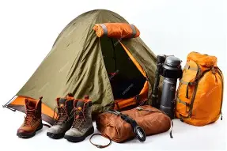

The equipment used in camping varies by intended activity. For instance, in survival camping the equipment consists of small items which have the purpose of helping the camper in providing food, heat, and safety. The equipment used in this type of camping must be lightweight and it is restricted to the mandatory items. Other types of camping such as winter camping involve having specially designed equipment in terms of tents or clothing that is strong enough to protect the camper's body from the wind and cold.
==List of common equipment==
First aid kit
Tent, lean-to, or other form of shelter
Hammer or mallet to drive tent stakes into the soil (hammers are often a claw hammer, which is also helpful for removing them)
Sleeping bag and/or blankets for warmth
Lantern or flashlight
Folding chairs for placement around a campfire
Raincoat or poncho
Hiking boots
